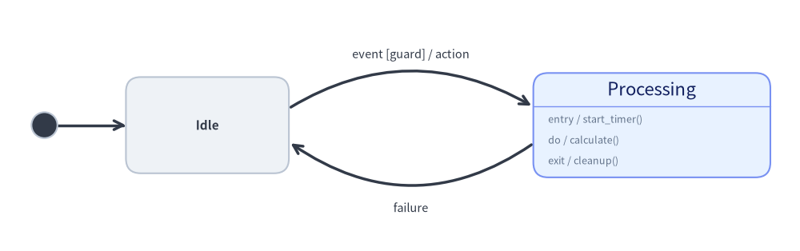
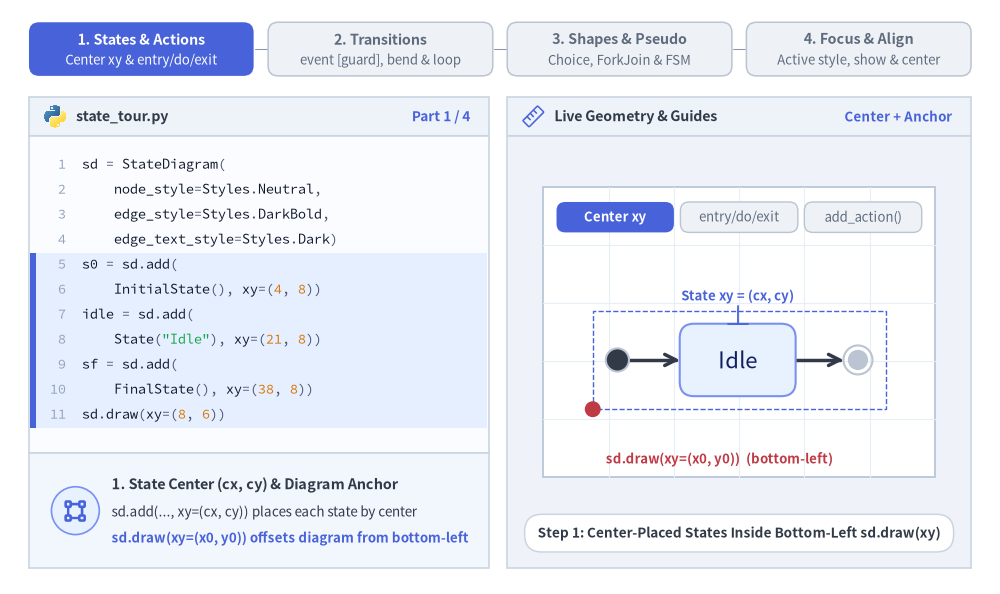
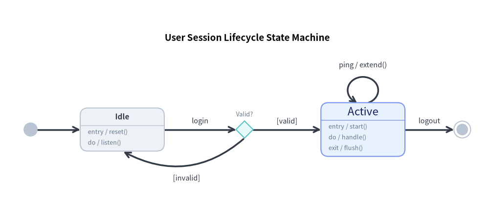
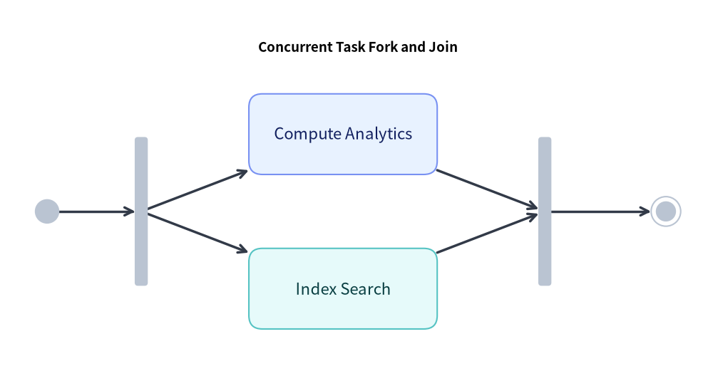
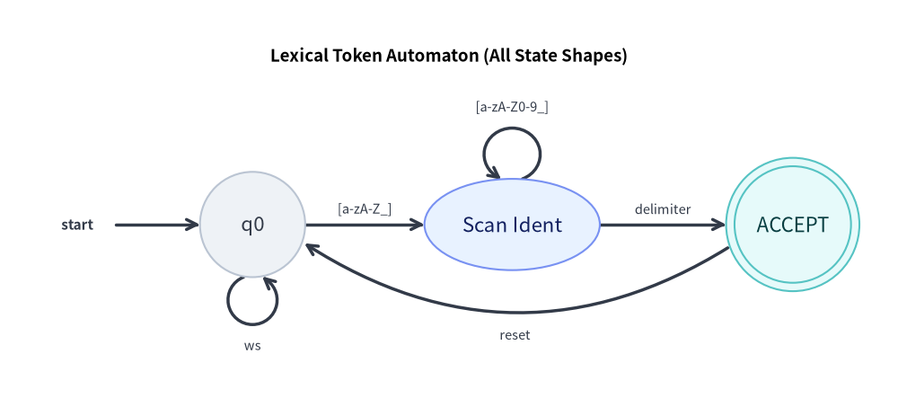

ステートマシン図 (StateDiagram): UML ステートチャート・オートマトン・状態遷移
StateDiagram は、振る舞いの状態遷移、有限オートマトン（FSM: Finite State Machine）、および UML 2.0 ステートチャートをモデル化します。専用の擬似状態、内部アクション区画（entry、do、exit）、および曲線アーク遷移を備えています。

Source Code
from drawlib.canvas import save, setup
from drawlib.diagrams.state import InitialState, State, StateDiagram
from drawlib.styles import Styles
setup(width=108, height=34)
sd = StateDiagram(
node_style=Styles.Neutral,
edge_style=Styles.DarkBold,
edge_text_style=Styles.Dark.patch(text_size=10.5),
)
init = sd.add(InitialState(style=Styles.Dark), xy=(6.0, 17.0))
idle = sd.add(State("Idle", shape="box", width=22.0, height=13.0), xy=(28.0, 17.0))
proc = sd.add(
State(
"Processing",
shape="box",
entry="start_timer()",
do="calculate()",
exit="cleanup()",
width=32.0,
style=Styles.PrimaryNeutral,
),
xy=(88.0, 17.0),
)
sd.connect(init, idle)
sd.connect(
idle,
proc,
event="event",
guard="guard",
action="action",
bend=-0.30,
start_side="top_right",
end_side="top_left",
)
sd.connect(
proc,
idle,
event="failure",
bend=-0.35,
start_side="bottom_left",
end_side="bottom_right",
text_style=Styles.Dark.patch(text_size=10.5, valign="top"),
)
sd.draw(xy=(0.0, 0.0))
save()
1. 基本概念と基本的な使い方
StateDiagram は、左下 (x0, y0)（または align="center"）を基準とするコンテナ内に、各状態（State）および UML 擬似状態（InitialState、FinalState、ChoiceState、ForkJoinState）を中心 (cx, cy) 座標で配置します。State カードは UML アクション区画（entry、do、exit、.add_action()）の自動描画をサポートし、sd.connect(...) は event [guard] / action ラベルの自動整形、曲線の bend アーク、および自己遷移ループを描画します。

- 5 種類の状態シェイプと中心配置 (
State,xy=(cx, cy)): 各状態はsd.draw(xy)内に中心座標(cx, cy)で登録され、"box"（角丸カード）、"ellipse"、"circle"、"double_circle"（FSM の受理状態）、および"text_only"をサポートします。 - UML アクション区画 (
entry,do,exit,.add_action()): 内部トリガーを持つ"box"状態は、自動的にヘッダー区切り線を描画して縦方向に拡張し、entry / ...、do / ...、exit / ...やカスタムの.add_action(kind, action)行を一覧表示します。 - UML 擬似状態 (
InitialState,FinalState,ChoiceState,ForkJoinState): 専用のサブクラスにより、開始黒丸、二重丸の終了状態、条件分岐のひし形、水平/垂直の並行同期バーをモデル化できます。 - 遷移・曲線アーク・安定した段階的表示 (
sd.connect,bend,show=False):event [guard] / actionラベルを自動整形し、対向する曲線アーク（bend）や自己遷移ループ（side="top"）を描画します。またshow=False指定時は、ダイアグラム全体の境界サイズを固定したまま接続アークを自動的に非表示にします。
2. コンストラクタ・主要クラス・パラメータリファレンス
from drawlib.diagrams.state import (
ChoiceState,
FinalState,
ForkJoinState,
InitialState,
State,
StateAction,
StateDiagram,
StateNodeBase,
StateTransition,
)
from drawlib.styles import Styles
sd = StateDiagram(
node_style=Styles.Neutral,
edge_style=Styles.DarkBold,
edge_text_style=Styles.Dark,
title="Session Lifecycle State Machine",
)
# State with action compartments + custom action
active = sd.add(
State("Active", shape="box", entry="start_heartbeat()", do="handle_requests()", exit="flush()", style=Styles.PrimaryNeutral),
xy=(60.0, 40.0),
)
active.add_action("on_timeout", "warn_idle()")
# Transition with guard and action
init = sd.add(InitialState(), xy=(10.0, 40.0))
sd.connect(init, active, event="login", guard="token_valid", action="init_session()")
パラメータリファレンス
StateDiagram クラス
| パラメータ | 型 | デフォルト | 説明 |
|---|---|---|---|
node_style |
Style |
(必須) | ダイアグラム内の状態ノードのベース Style オブジェクト。 |
edge_style |
Style |
(必須) | 遷移エッジおよび矢印のベース Style オブジェクト。 |
edge_text_style |
Style |
(必須) | 遷移ラベルのベース Style オブジェクト。 |
title |
str |
"" |
ダイアグラム上部に表示する任意のタイトル。 |
title_style |
Style | None |
None |
ダイアグラムタイトルの Style オブジェクト（任意）。 |
style |
Style | None |
None |
ダイアグラム全体の背景を上書きする Style（任意）。 |
width |
float | None |
None |
固定キャンバス幅（None の場合はコンテンツから自動計算）。 |
height |
float | None |
None |
固定キャンバス高さ（None の場合はコンテンツから自動計算）。 |
margin |
float |
5.0 |
自動サイズ計算時に全状態の周囲に確保する外側マージン。 |
State クラス（StateNodeBase を継承）
| パラメータ | 型 | デフォルト | 説明 |
|---|---|---|---|
name |
str |
(必須) | 状態名／ラベルテキスト。 |
shape |
Literal["box", "ellipse", "circle", "double_circle", "text_only"] |
"box" |
状態ノードの幾何学形状。 |
entry |
str |
"" |
入場アクション（shape="box" 時に entry / <entry> として描画）。 |
do |
str |
"" |
継続アクティビティ（shape="box" 時に do / <do> として描画）。 |
exit |
str |
"" |
退場アクション（shape="box" 時に exit / <exit> として描画）。 |
width |
float | None |
None |
幅（"circle" / "double_circle" の場合は直径）。デフォルト: "box"=22.0、"ellipse"=24.0、"circle" / "double_circle" / "text_only"=16.0。 |
height |
float | None |
None |
状態の高さ。デフォルト: "box"=12.0（アクション数に応じて自動拡張）、"ellipse"=13.0、"circle" / "double_circle"=width、"text_only"=8.0。 |
size |
tuple[float, float] | None |
None |
width と height をまとめて指定する (width, height) タプル（任意）。 |
style |
Style | None |
None |
枠線、塗りつぶし、文字色、shape_r の Style オーバーライド（任意）。 |
show |
bool |
True |
表示フラグ（False の場合、接続されている StateTransition アークも自動非表示）。 |
state.add_action(kind: str, action: str) -> State:{kind} / {action}として描画されるStateAction(kind=kind, action=action)をstate.actionsに追加し、selfを返します。
擬似状態クラス（StateNodeBase のサブクラス）
| クラス | コンストラクタシグネチャ | デフォルトサイズ | 説明 |
|---|---|---|---|
InitialState |
InitialState(name="", radius=1.75, style=None, show=True) |
直径 3.5 |
開始エントリポイントを表す塗りつぶし円。 |
FinalState |
FinalState(name="", radius=2.2, style=None, show=True) |
直径 4.4 |
ステートマシンの終了を表す二重同心円（ブルズアイ）。 |
ChoiceState |
ChoiceState(name="", size=4.5, style=None, show=True) |
4.5 × 4.5 |
条件ガード評価による動的分岐を表すひし形擬似状態。 |
ForkJoinState |
ForkJoinState(name="", orientation="horizontal"|"vertical", length=16.0, thickness=1.8, style=None, show=True) |
16.0 × 1.8（または 1.8 × 16.0） |
並行遷移の分岐（Fork）および同期合流（Join）を表す太線バー。 |
StateTransition と sd.connect(...)
| パラメータ | 型 | デフォルト | 説明 |
|---|---|---|---|
source / start |
StateNodeBase |
(必須) | 遷移元の状態または擬似状態（sd.connect では source、StateTransition では start）。 |
target / end |
StateNodeBase |
(必須) | 遷移先の状態または擬似状態（sd.connect では target、StateTransition では end）。 |
label |
str |
"" |
明示的な遷移ラベル全文（空でない場合、event / guard / action より優先）。 |
event |
str |
"" |
トリガーイベント名（例: "login"、"timeout"）。 |
guard |
str |
"" |
[{guard}] 形式でフォーマットされるガード条件。 |
action |
str |
"" |
/ {action} 形式でフォーマットされる遷移アクション（エフェクト）。 |
bend |
float |
0.0 |
"curved" ルーティング時の曲率（0.0 = 直線、正負の値で外側へ湾曲）。 |
start_side |
Side |
"auto" |
出発側アンカー辺（"left"、"right"、"top"、"bottom"、"auto"、"top_left"、"top_right"、"bottom_left"、"bottom_right"）。 |
end_side |
Side |
"auto" |
到着側アンカー辺（上下左右＋対角の 8 方向および "auto" に対応）。 |
routing |
Literal["curved", "orthogonal", "direct"] |
"curved" |
遷移パスの配線戦略。 |
style |
Style | None |
None |
遷移線および矢印の Style オーバーライド（任意）。 |
text_style |
Style | None |
None |
遷移ラベルテキストの Style オーバーライド（任意）。 |
padding |
float | tuple[float, float] |
0.0 |
状態境界と矢印端点の間の余白距離。 |
side / loop_side |
LoopSide |
"top" |
自己遷移（source is target）時のループ接続辺（全 8 方向に対応）。 |
loop_width |
float | None |
None |
自己遷移ループ楕円の幅（任意）。 |
loop_height |
float | None |
None |
自己遷移ループ楕円の高さ（任意）。 |
loop_ratio |
float |
0.88 |
自己遷移ループ楕円の外周に対する円弧カバー率。 |
show |
bool |
True |
遷移線の表示フラグ。 |
登録・サイズ取得・描画メソッド
sd.add(item: StateNodeBase, xy=(cx, cy), width=None, height=None, style=None, show=None) -> StateNodeBase: 状態または擬似状態を中心(cx, cy)に配置（任意のwidth、height、style、showオーバーライドに対応）し、ミュータブルな要素インスタンスを返します。show=Falseの場合、ダイアグラムの外接サイズを固定したまま、その状態および接続されているすべての遷移がdraw()時にスキップされます。sd.connect(source, target, *, label="", event="", guard="", action="", side="top", bend=0.0, start_side="auto", end_side="auto", routing="curved", style=None, text_style=None, padding=0.0, loop_width=None, loop_height=None, loop_ratio=0.88, show=True) -> StateTransition（およびsd.add_transition(trans) -> StateTransition）。sd.get_bounds() -> tuple[float, float, float, float]: 全状態および自己遷移ループを囲む(min_x, min_y, max_x, max_y)を返します。sd.get_size() -> tuple[float, float]: ダイアグラムの(width, height)（marginを含む）を返します。sd.draw(xy=(0.0, 0.0), *, scale: float = 1.0) -> None: 左下xyを基準として、状態座標、寸法、曲線アーク、フォントサイズをscale倍に比例スケーリングしてステートマシン図を描画します。
3. セッションライフサイクルのステートマシン（shape="box"・ChoiceState・自己ループ）
次の完全なサンプルでは、擬似状態、選択ひし形 (ChoiceState)、内部アクション区画、自己ループ、および曲線の戻り遷移を組み合わせています。
from drawlib.canvas import save, setup
from drawlib.diagrams.state import ChoiceState, FinalState, InitialState, State, StateDiagram
from drawlib.styles import Styles
setup(width=128, height=58)
sd = StateDiagram(
node_style=Styles.Neutral,
edge_style=Styles.DarkBold,
edge_text_style=Styles.Dark.patch(text_size=10.5),
title="User Session Lifecycle State Machine",
title_style=Styles.BlackBold.patch(text_size=13.5),
)
# 1. Pseudo-states and state nodes
init = sd.add(InitialState(), xy=(8.0, 24.0))
idle = sd.add(
State("Idle", shape="box", entry="reset()", do="listen()", width=22.0),
xy=(32.0, 24.0),
)
valid_check = sd.add(ChoiceState(name="Valid?", style=Styles.SecondaryNeutral), xy=(64.0, 24.0))
active = sd.add(
State(
"Active",
shape="box",
entry="start()",
do="handle()",
exit="flush()",
style=Styles.PrimaryNeutral,
width=22.0,
),
xy=(95.0, 24.0),
)
final = sd.add(FinalState(), xy=(121.0, 24.0))
# 2. Connect transitions
sd.connect(init, idle)
sd.connect(idle, valid_check, event="login")
# Choice branches (success vs failure)
sd.connect(valid_check, active, guard="valid")
sd.connect(
valid_check,
idle,
guard="invalid",
bend=-0.35,
start_side="bottom",
end_side="bottom",
text_style=Styles.Dark.patch(text_size=10.5, valign="top"),
)
# Self-transition heartbeat loop
sd.connect(active, active, side="top", event="ping", action="extend()", loop_width=8.0, loop_height=7.0)
# Termination
sd.connect(active, final, event="logout")
sd.draw(xy=(0.0, 0.0))
save()

4. 並行タスク同期 (ForkJoinState)
並行スレッドの分岐と同期合流を表現するには ForkJoinState を使用します。
from drawlib.canvas import save, setup
from drawlib.diagrams.state import FinalState, ForkJoinState, InitialState, State, StateDiagram
from drawlib.styles import Styles
setup(width=106, height=56)
sd = StateDiagram(
node_style=Styles.Neutral,
edge_style=Styles.DarkBold,
edge_text_style=Styles.Dark.patch(text_size=10.5),
title="Concurrent Task Fork and Join",
title_style=Styles.BlackBold.patch(text_size=13.5),
)
init = sd.add(InitialState(), xy=(7.0, 24.5))
fork = sd.add(ForkJoinState(orientation="vertical", length=22.0), xy=(21.0, 24.5))
job_a = sd.add(State("Compute Analytics", shape="box", width=28.0, style=Styles.PrimaryNeutral), xy=(51.0, 36.0))
job_b = sd.add(State("Index Search", shape="box", width=28.0, style=Styles.SecondaryNeutral), xy=(51.0, 13.0))
join = sd.add(ForkJoinState(orientation="vertical", length=22.0), xy=(81.0, 24.5))
final = sd.add(FinalState(), xy=(99.0, 24.5))
sd.connect(init, fork)
sd.connect(fork, job_a)
sd.connect(fork, job_b)
sd.connect(job_a, join)
sd.connect(job_b, join)
sd.connect(join, final)
sd.draw(xy=(0.0, 0.0))
save()

5. 有限オートマトンと全 5 種類の State 形状
UML の "box" カードに加えて、State は "text_only"（枠線なしの開始ラベルノード）、"circle"（標準オートマトン状態）、"ellipse"（カプセル型状態）、"double_circle"（受理状態）をサポートしており、対角アンカー辺（"top_right"、"bottom_left" など）とも組み合わせられます。
from drawlib.canvas import save, setup
from drawlib.diagrams.state import State, StateDiagram
from drawlib.styles import Styles
setup(width=128, height=58)
sd = StateDiagram(
node_style=Styles.Neutral,
edge_style=Styles.DarkBold,
edge_text_style=Styles.Dark.patch(text_size=10.5),
title="Lexical Token Automaton (All State Shapes)",
title_style=Styles.BlackBold.patch(text_size=13.5),
)
# 1. text_only start indicator, circle state, ellipse state, and double_circle accepting state
start_lbl = sd.add(State("start", shape="text_only", width=11.0), xy=(11.0, 26.0))
q0 = sd.add(State("q0", shape="circle", width=15.0, style=Styles.Neutral), xy=(36.0, 26.0))
q1 = sd.add(
State("Scan Ident", shape="ellipse", width=25.0, height=13.0, style=Styles.PrimaryNeutral),
xy=(73.0, 26.0),
)
q_accept = sd.add(
State("ACCEPT", shape="double_circle", width=19.0, style=Styles.SecondaryNeutral),
xy=(113.0, 26.0),
)
# 2. Transitions with self-loops and diagonal anchors
sd.connect(start_lbl, q0)
sd.connect(q0, q0, side="bottom", label="ws", loop_width=7.0, loop_height=7.0)
sd.connect(q0, q1, label="[a-zA-Z_]")
sd.connect(q1, q1, side="top", label="[a-zA-Z0-9_]", loop_width=8.0, loop_height=7.5)
sd.connect(q1, q_accept, label="delimiter")
sd.connect(
q_accept,
q0,
label="reset",
bend=-0.32,
start_side="bottom_left",
end_side="bottom_right",
text_style=Styles.Dark.patch(text_size=10.5, valign="top"),
)
sd.draw(xy=(0.0, 0.0))
save()

6. ベストプラクティスとガイドライン
- 双方向遷移には
bendを使用: 2 つの状態間で相互に遷移する場合（例:Idle↔Active）、往路にbend=0.25、復路にbend=-0.25（または対角ポートと負のbend）を設定してアーク同士が重ならないようにしてください。 - 標準ラベルフォーマットの活用:
label="login [valid] / init"と手書きする代わりに、event、guard、actionパラメータを個別に渡すことを推奨します。Drawlib が標準 UML のタイポグラフィとスペース調整を自動適用します。 - 選択ひし形 (
ChoiceState) の明確なガード表記:ChoiceStateから出る各分岐には、明示的なguard条件（guard="is_valid"とguard="is_invalid"など）を付与してください。